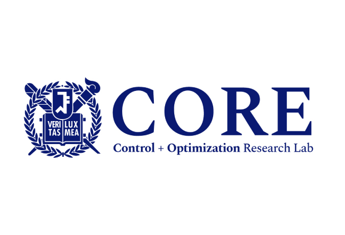

Creative-Pioneering Researcher
July 1, 2018
Prof. Yang has been selected as a Creative-Pioneering Researcher at SNU. He will conduct research on “Optimal Control and Reinforcement Learning with Inaccurate Data”. This is an exciting opportunity, which can be extended up to 9 ...

CORE lab has moved from USC to SNU
March 1, 2018
We are excited to do some fun stuffs at SNU. It’s good to be back!
‹
1
…
21
22
23